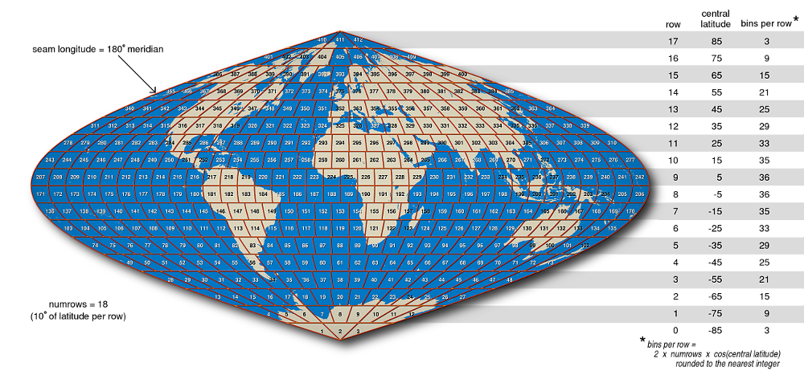
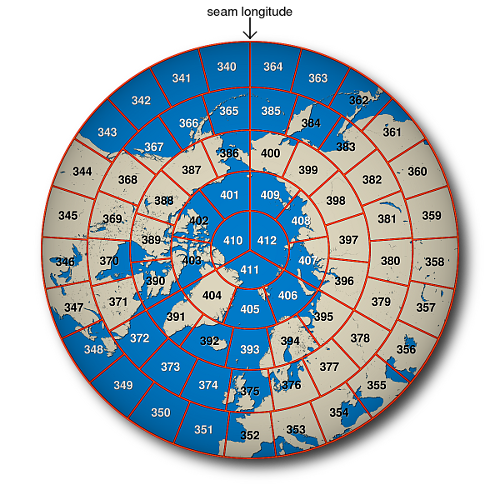
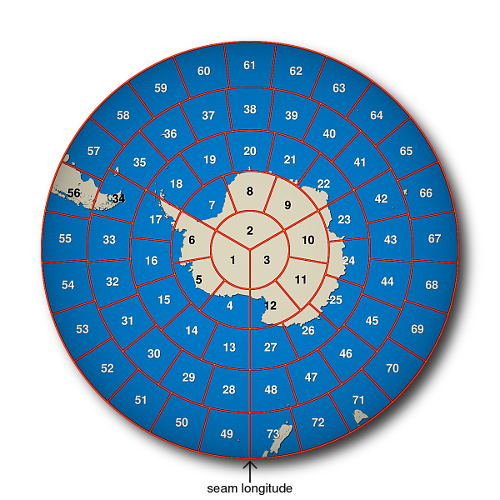
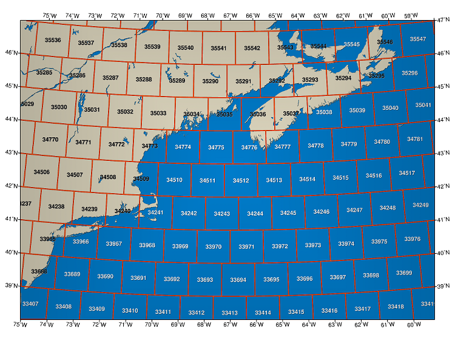
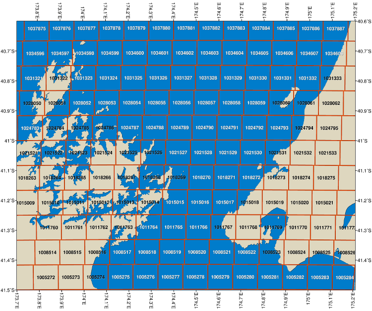
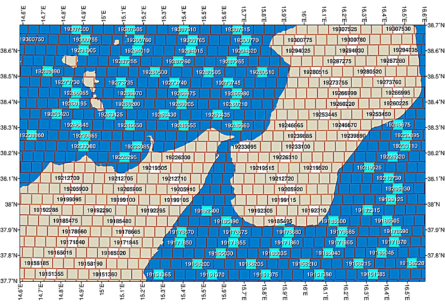
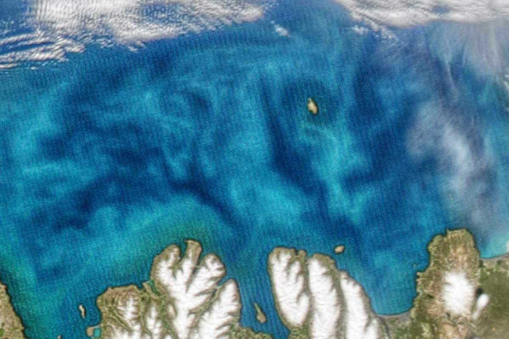

Integerized Sinusoidal Binning Scheme for Level 3 Data
Source:vignettes/articles/l3bins.Rmd
l3bins.RmdThis page is an archived copy of NASA OBPG’s documentation Integerized Sinusoidal Binning Scheme for Level 3 Data (original), recovered from the Wayback Machine capture of 6 January 2026 and reproduced here for reference with attribution. The original is a work of the US Government. Figures are the thumbnails from the saved page; full-size versions link to the original site. The raw capture and the Markdown source live in the package under
inst/l3bins/.
The level-3 products produced by NASA’s Ocean Biology processing Group comprise level-2 data that have been spatially and temporally aggregated after being filtered to exclude unwanted values. Here follows a description of the spatial aggregation – or binning – method that we currently use.
Description
Our level-3 binning scheme is based on the sinusoidal map projection. A modification of that projection is used to divide the Earth into bins of roughly equal area. The area of the bins is usually chosen based on the characteristics of the data set that is being binned. (If an orbiting sensor has an instantaneous field of view that is nearly 100 kilometers across, then it may not make much sense to group pixels into bins that are only 5 kilometers across, for example.)
For the purposes of this explanation, let us choose a bin size such that each bin spans ten degrees of latitude from south to north. The bins of such a scheme – shown in Figure 1 – are much larger than those we use for any of the data sets in our archive, but that makes them big enough to see in a small map of the world, and the basic construction of the bins is the same as for higher-resolution / smaller-bin arrangements.

(full size on the original site: https://oceancolor.gsfc.nasa.gov/images/resources/docs/format/l3bins/L3Bins.png)

Fig. 1
A sinusoidal map of the Earth centered on the prime meridian with
10-degree bin boundaries and bin numbers superimposed. This bin
resolution is coarser than we use for any of our data sets, but it
serves to illustrate some of the basic features of this binning scheme
which are common to all of the resolutions that we support – namely:
- the alignment of all bins into zonal rows bounded along their north and south edges by parallels of latitude,
- the use of the 180-degree meridian as the seam along which all rows start and end,
- the choice of an even number of rows such that no row straddles the equator,
- the division of each row into an integral number of bins that depends on the cosine of the central latitude of that row,
- the monotonic increase in bin number from south to north and from west to east in each row, and
- the division of the two polar rows into three bins each.
The above figure shows the sinusoidal nature of our chosen binning scheme in that the number of bins in each row is reduced by the cosine of the latitude as one moves north or south of the equator. Where it differs from a straight sinusoidal projection is in the rounding that occurs when determining how many bins a given row should be divided into. This rounding is necessary to avoid fractional bins at the ends of rows, but it does introduce a small departure from area equality among bins from different rows. A further small departure from area equality is introduced by the fact that we assume a spherical Earth instead of using a more precise ellipsoidal model when we lay out our bin boundaries.
Figure 2, below, provides a polar view of the layout of level-3 bins.

(full size on the original site: https://oceancolor.gsfc.nasa.gov/images/resources/docs/format/l3bins/L3Bins.north.png)


(full size on the original site: https://oceancolor.gsfc.nasa.gov/images/resources/docs/format/l3bins/L3Bins.south.png)

Fig. 2
Polar stereographic maps of the Earth showing 10-degree bin boundaries
and bin numbers around the north and south poles. The antimeridian is
indicated as “seam longitude”.
Resolutions
The level-3 bin files that we currently distribute come in one of three resolutions. As hinted at before, the chosen resolution depends somewhat on the mission. The following table summarizes our level-3 resolutions.
| Approximate Linear Dimension (km) | Approximate Angular Dimension | Average Bin Area (km^2)* | Number of Latitudinal Rows | Total Number of Bins | Missions Using This Resolution |
|---|---|---|---|---|---|
| 111 | 1 degree | 12,392 | 180 | 41,252 | SAC-D/Aquarius |
| 9.28 | 5 minutes | 86 | 2160 | 5,940,422 | OrbView-2/SeaWiFS ADEOS/OCTS |
| 4.64 | 2.5 minutes | 21.5 | 4320 | 23,761,676 | Nimbus-7/CZCS Terra/MODIS Aqua/MODIS Suomi-NPP/VIIRS Envisat/MERIS |
*Area computations are based on a spherical Earth having a radius of 6378.145 kilometers.
1-Degree (111-kilometer) Bins
One degree (or 111 kilometers) is the bin dimension chosen for the Aquarius mission. This binning scheme has 180 rows. Figure 3 shows the size and orientation of these bins over the northwestern Atlantic Ocean.

(full size on the original site: https://oceancolor.gsfc.nasa.gov/images/resources/docs/format/l3bins/L31degBins.nwAtlantic.png)

Fig. 3
Albers conic equal area map of the northwestern Atlantic showing
1-degree bin boundaries and bin numbers as used by the Aquarius
mission.
9.28-kilometer Bins
We divide the Earth up into 2160 latitudinal rows for the SeaWiFS mission. For our spherical Earth having a radius of 6378.145 kilometers, this results in an average bin width of 9.28 kilometers. Figure 4 shows the size and orientation of these bins over New Zealand’s Cook Strait.

(full size on the original site: https://oceancolor.gsfc.nasa.gov/images/resources/docs/format/l3bins/L3_9kmbins.CookStrait.png)

Fig. 4
Lambert azimuthal equal area map of New Zealand’s Cook Strait showing
9.28-kilometer bin boundaries and bin numbers as used by the SeaWiFS and
ADEOS/OCTS mission.
4.64-kilometer Bins
Double the number of latitudinal rows to 4320, and you get the 4.64-kilometer bin size that we use for the MODIS missions. Figure 5 shows the size and orientation of such bins around the Strait of Messina.

(full size on the original site: https://oceancolor.gsfc.nasa.gov/images/resources/docs/format/l3bins/L3_4kmbins.StraitOfMessina.png)

Fig. 5
Lambert azimuthal equal area map of portions of the Italian regions,
Sicily and Calabria, showing 4.64-kilometer bin boundaries and bin
numbers for selected, highlighted bins as used by the MODIS and other
missions.
Note that computer rounding errors can become significant at higher bin resolutions (smaller bin sizes). You can get different bin numbers for the same geographic coordinates if you perform your computations using 32-bit arithmetic and then repeat the computation using 64-bit arithmetic. 64-bit arithmetic was used in the preparation of the above figures.
Bins and Pixels
The binning scheme described on this page is applied to level-2 data; specifically, the location of the center of each valid level-2 pixel determines which bin that pixel gets thrown into. Similarly, when it is time to make an image of the level-3 data, the data from the level-3 bins need to be interpolated into a regular grid of level-3 pixels that are suitable for display. Figure 6 shows the relationships between these bins and pixels using a sample MODIS scene of the north coast of Iceland. (More of the imaged area is available in our image gallery.)

Overlays (shown interactively on the original page; transparent PNGs meant to sit on top of the true colour image):


Fig. 6
Lambert azimuthal equal-area image of Aqua/MODIS data at a nominal
250-meter resolution showing the north coast of Iceland. Selecting
“Level-2 MODIS pixel boundaries” will overlay the nominally 1-kilometer
pixel boundaries on the image. The bowtie
effect results in pixel overlap (shown here by using yellow, orange,
and black for sequential scan lines). Selecting “Level-3 bin boundaries”
displays a red overlay of the 4.64-kilometer bin boundaries described in
Figure 5. Selecting “Level-3 SMI pixel boundaries” displays the edges of
those pixels in white. At the equator, these standard-mapped-image
pixels would exactly match the corresponding level-3 bins. The closer
one gets to the poles, however, the more SMI pixels there are per
bin.
Sample Code
A set of Perl subroutines are provided below as an illustration of the steps needed to convert back and forth between geographic coordinates and level-3 bin numbers. The variable names used are similar to those given in Appendix A of NASA Technical Memorandum 104566, Vol. 32.
To use the following subroutines, one would call initbin
once with the number of rows in the desired bin resolution. Then one
could call latlon2bin or bin2latlon as often
as needed to convert a latitude/longitude pair to a bin number or a bin
number to a center latitude/longitude. The bin2bounds
subroutine will return the bounding latitudes and longitudes for any
given bin number should you wish to plot bin outlines as in the above
figures.
my $pi = 4*atan2(1,1);
my ($numrows, @basebin, @latbin, @numbin);
############################################
# #
# Insert the rest of your code here. #
# #
############################################
# The following functions are based on the pseudocode found in Appendix A of:
#
# Campbell, J.W., J.M. Blaisdell, and M. Darzi, 1995:
# Level-3 SeaWiFS Data Products: Spatial and Temporal Binning Algorithms.
# NASA Tech. Memo. 104566, Vol. 32,
# S.B. Hooker, E.R. Firestone, and J.G. Acker, Eds.,
# NASA Goddard Space Flight Center, Greenbelt, Maryland
sub initbin {
$numrows = shift;
$basebin[0] = 1;
for(my $row=0; $row<$numrows; $row++){
$latbin[$row] = (($row + 0.5)*180.0/$numrows) - 90.0;
$numbin[$row] = int(2*$numrows*cos($latbin[$row]*$pi/180.0) + 0.5);
if($row > 0){
$basebin[$row] = $basebin[$row - 1] + $numbin[$row - 1];
}
}
$totbins = $basebin[$numrows - 1] + $numbin[$numrows - 1] - 1;
}
sub lat2row {
my $lat = shift;
my $row = int((90 + $lat)*$numrows/180.0);
if($row >= $numrows){
$row = $numrows - 1;
}
$row;
}
sub rowlon2bin {
my ($row,$lon) = @_;
$lon = constrain_lon($lon);
my $col = int(($lon + 180.0)*$numbin[$row]/360.0);
if($col >= $numbin[$row]){
$col = $numbin[$row] - 1;
}
$basebin[$row] + $col;
}
sub latlon2bin {
my ($lat,$lon) = @_;
$lat = constrain_lat($lat);
$lon = constrain_lon($lon);
my $row = lat2row($lat);
my $col = int(($lon + 180.0)*$numbin[$row]/360.0);
if($col >= $numbin[$row]){
$col = $numbin[$row] - 1;
}
$basebin[$row] + $col;
}
sub bin2latlon {
my $bin = shift;
my $row = $numrows - 1;
if($bin < 1){
$bin = 1;
}
while($bin < $basebin[$row]){
$row--;
}
my $clat = $latbin[$row];
my $clon = 360.0*($bin - $basebin[$row] + 0.5)/$numbin[$row] - 180.0;
($clat,$clon);
}
sub bin2bounds {
my $bin = shift;
my $row = $numrows - 1;
if($bin < 1){
$bin = 1;
}
while($bin < $basebin[$row]){
$row--;
}
my $north = $latbin[$row] + 90.0/$numrows;
my $south = $latbin[$row] - 90.0/$numrows;
my $lon = 360.0*($bin - $basebin[$row] + 0.5)/$numbin[$row] - 180.0;
my $west = $lon - 180.0/$numbin[$row];
my $east = $lon + 180.0/$numbin[$row];
($north,$south,$west,$east);
}
sub constrain_lat {
my $lat = shift;
$lat = 90 if($lat > 90);
$lat = -90 if($lat < -90);
$lat;
}
sub constrain_lon {
my $lon = shift;
$lon += 360 while($lon < -180);
$lon -= 360 while($lon > 180);
$lon;
}